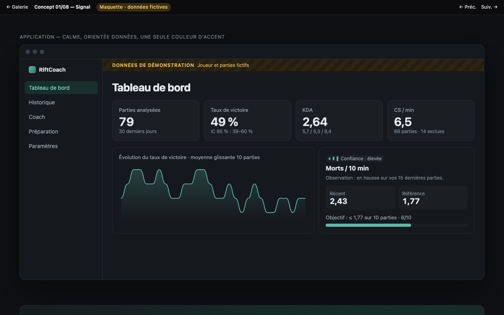
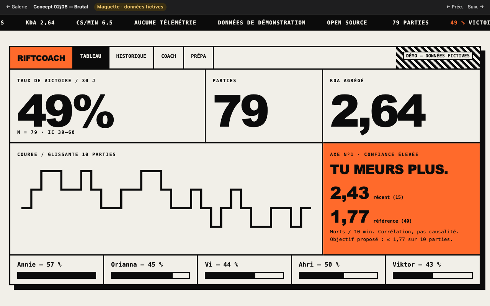
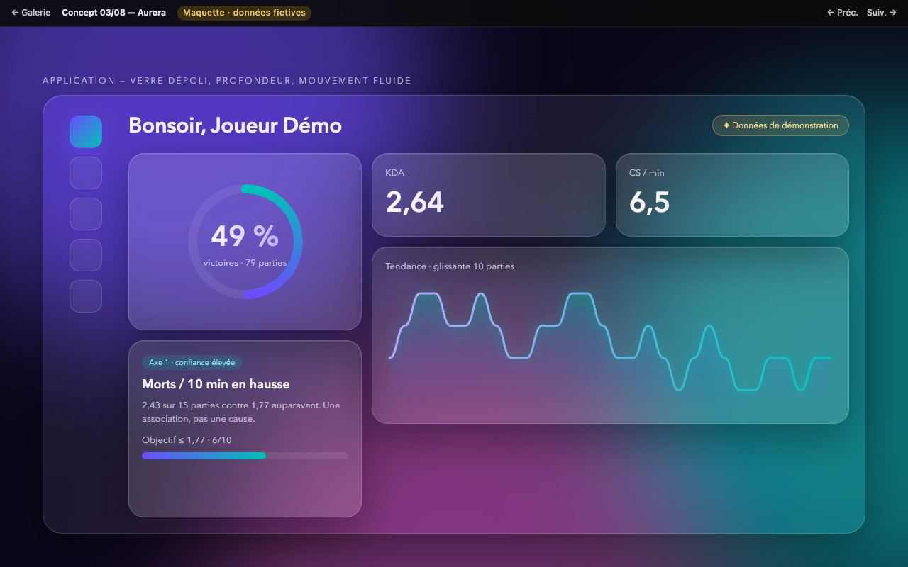
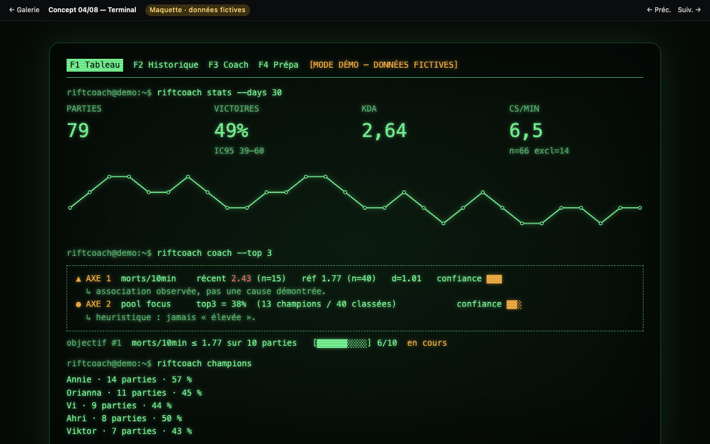
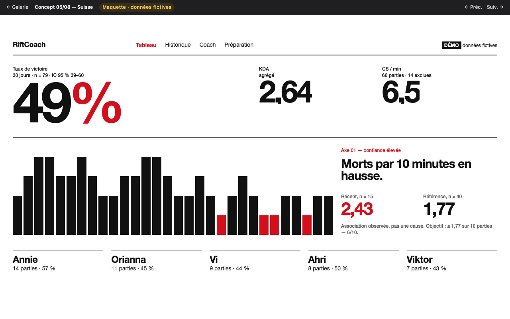
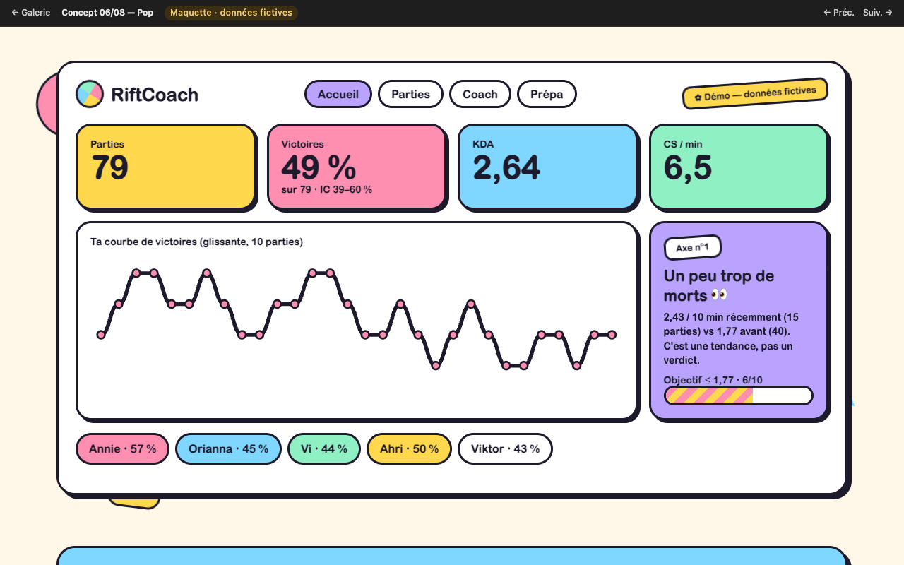
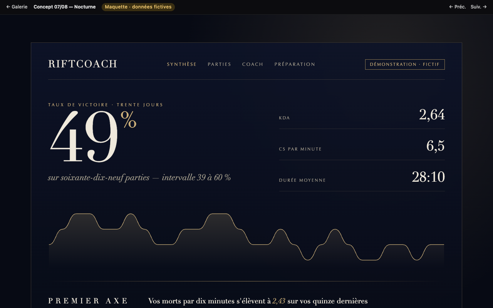
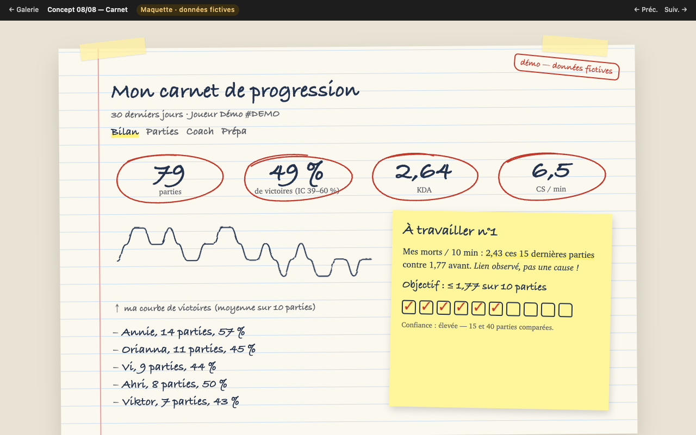

Trop de chiffres
Les outils classiques affichent des dizaines d'indicateurs sans dire lesquels comptent pour vous, ni sur combien de parties ils reposent.
RiftCoach est un compagnon League of Legends qui transforme votre historique en trois axes de progression clairs, justifiés par vos chiffres, puis en objectifs que vous pouvez suivre partie après partie.
Open source · Apache-2.0 · prototype v0.1 sur données de démonstration
Pourquoi
Les outils classiques affichent des dizaines d'indicateurs sans dire lesquels comptent pour vous, ni sur combien de parties ils reposent.
Voir qu'on meurt trop ne dit pas quoi faire ensuite. RiftCoach propose un objectif mesurable et vérifie, sur les parties suivantes, s'il est atteint.
Aucun compte, aucune télémétrie, aucun envoi vers une IA externe. Tout est calculé et stocké sur votre machine.
Comment
Taux de victoire avec intervalle de confiance, KDA, CS/min, durée, tendances sur 7 et 30 jours. Chaque indicateur affiche sa période, sa définition et la taille de l'échantillon. Une donnée manquante est exclue, jamais devinée.
Un moteur de règles déterministe compare vos parties récentes à votre propre référence. Il ne conclut rien sous 10 parties, retient au plus 3 axes, et indique pour chacun les données utilisées et un niveau de confiance. Une corrélation n'est jamais présentée comme une cause.
Chaque axe devient un objectif chiffré (par exemple « morts / 10 min ≤ 1,77 sur 10 parties »), suivi automatiquement à partir de son adoption.
Statut honnête
Aucun compte · aucune télémétrie · aucune requête réseau en mode démo · suppression des données depuis l'application.
Pas de lecture mémoire, pas d'information cachée en partie, pas de calculateur de MMR, pas de dé-anonymisation. Chaque fonctionnalité est documentée dans un registre de conformité.
Exploration visuelle
Des maquettes animées de l'application et du site, chacune dans un style radicalement différent. Données fictives ; rien n'est fonctionnel dans ces pages.

01 SignalSobre, orienté données. Le style actuel de l'app.
02 BrutalÉditorial, typo géante, bandeau défilant.
03 AuroraVerre dépoli, dégradés vivants, bento.
04 TerminalÉcran CRT, monospace, frappe animée.
05 SuisseGrille typographique, accent rouge.
06 PopFormes colorées, rebonds élastiques.
07 NocturneCinématique, serif, fondus lents.
08 CarnetJournal dessiné à la main, tracés au stylo.Contribuer